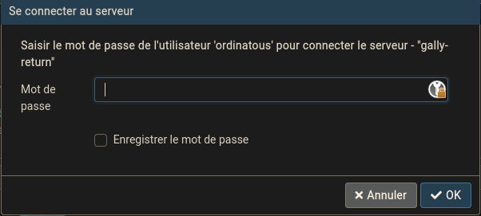

Travail en cours.
L’objectif étant :
- anonymiser un fichier de données CSV
- l’import et l’export du fichier CSV dans une database en SQL
Contexte
A la base , c’est parti d’un petit graphique que j’ai fait , en réaction de l’augmentation du prix du diesel.
A l’aide d’un fichier csv , avec 13 observations.
"Date";"Prix";"Station"
"30/01/2021";"1.309";"Payot"
"20/02/2021";"1.359";"Payot"
"17/03/2021";"1.369";"Payot"
"26/03/2021";"1.348";"Magland"
"01/04/2021";"1.359";"Payot"
"12/04/2021";"1.349";"Payot"
"22/04/2021";"1.359";"Payot"
"13/05/2021";"1.519";"Payot"
"27/05/2021";"1.379";"Payot"
"20/07/2021";"1.449";"Amancy"
"01/08/2021";"1.470";"Payot"
"01/09/2021";"1.470";"Payot"
"01/10/2021";"1.580";"Payot"
C’est petit, oui .
Mais ça permet d’avoir un champ de compréhension, petit, et maitrisé pour l’exemple, avec une dimension humaine que tout un chacun peu reproduire, enfin si on conduit un diesel.
Et assez rapidement , on se rend compte de les faiblesses de la donnée :
- Représentativité :à qui s’adresse et représente cette donnée ?
- confiance: quelle fiabilité ?
On voit très vite que:
- il y a 2 intrus dans les stations
- et des dates serrées par “moment”.
Plus 2 dates, dont moi même je dois faire confiance ..
POSTGRES
Informations générales
Postgres à un utilisateur maitre qui se nomme postgres, qui est l’équivalent de root dans les système Gnu/Linux.
L’outil permettant d’interagir avec le SGBDDR (Système de Gestion de Base De Données Relationnelle) est psql.
Notions importantes
Sécurité et modes de connexions
Les serveurs postgres ont des restrictions de connections , étant en mode de développement local , je peux m’y connecter sans modification du fichier de configuration qui se situe ici: /etc/postgresql/13/main/pg_hba.conf.
En voici un aperçu :
# DO NOT DISABLE!
# If you change this first entry you will need to make sure that the
# database superuser can access the database using some other method.
# Noninteractive access to all databases is required during automatic
# maintenance (custom daily cronjobs, replication, and similar tasks).
#
# Database administrative login by Unix domain socket
local all postgres peer
# TYPE DATABASE USER ADDRESS METHOD
# "local" is for Unix domain socket connections only
local all all peer
# IPv4 local connections:
host all all 127.0.0.1/32 md5
# IPv6 local connections:
host all all ::1/128 md5
# Allow replication connections from localhost, by a user with the
# replication privilege.
local replication all peer
host replication all 127.0.0.1/32 md5
host replication all ::1/128 md5
Le message d’avertissement est sans équivoque , si vous modifier la première ligne , vous risquez de ne plus du tout pouvoir vous y connecter quelque soit l’utilisateur.
Authentification
Pour commencer à interagir avec le SGBDDR , il faut donc prendre la session de l’utilisateur postgres. Par facilité on serait tenté de l’utiliser en permanence , c’est vrai en tant que DBA (database administrateur), dont le ROLE est de définir qui fait quoi.
Mais pas pour un dev, néanmoins c’est rarement le cas en entreprise, les mauvaises pratiques tendent à disparaitre mais c’est compliqué.
❯ sudo su - postgres
[sudo] Mot de passe de ordinatous :
postgres@gally-return:~$ psql
psql (13.4 (Debian 13.4-0+deb11u1))
Saisissez « help » pour l'aide.
On va donc définir un utilisateur , avec un mot de passe chiffré ayant la capacité de créer des bases de données:
postgres=# CREATE USER ordinatous WITH ENCRYPTED PASSWORD 'password' CREATEDB;
CREATE ROLE
postgres=#
Ce qui permettra par la suite de se connecter au serveur avec des outils tel que pgAdmin ou qgis.

pgAdmin
pgAdmin est un serveur Apache qui permet de se connecter au serveur afin de manager les base de données.
Un serveur n’a pas d’interface graphique, du moins sous Gnu/Linux , encore que les serveurs ubuntu en installe un.
Ce qui entraîne des effets de bords notamment au niveau de la gestion de l’adressage IP, car le serveurX (serveur graphique) lance NetworkManager automatiquement, et son comportement est d’utiliser le DHCP). Mais là n’est pas le sujet.
Installation de pgAdmin4
pgAdmin4 est disponible sous forme de docker, serveur web python , debian base, centos ou windows:
Usage de pgAdmin
Très utile quand on a beaucoup de db à gérer sur une même instance .
Ça donne un bon accès aux informations relative à l’administration de base de données:
- charge
- nombre de session
- nombres de requêtes
- gestion des droits
Connexion au serveur local
Postgres dispose d’une base par défaut nommé postgres ainsi que 2 autres:
- template0
- template1
db_test=> \l
Liste des bases de données
Nom | Propriétaire | Encodage | Collationnement | Type caract. | Droits d'accès
-----------+--------------+----------+-----------------+--------------+-----------------------
db_test | ordinatous | UTF8 | fr_FR.UTF-8 | fr_FR.UTF-8 |
geo_test | postgres | UTF8 | fr_FR.UTF-8 | fr_FR.UTF-8 |
postgres | postgres | UTF8 | fr_FR.UTF-8 | fr_FR.UTF-8 |
template0 | postgres | UTF8 | fr_FR.UTF-8 | fr_FR.UTF-8 | =c/postgres +
| | | | | postgres=CTc/postgres
template1 | postgres | UTF8 | fr_FR.UTF-8 | fr_FR.UTF-8 | =c/postgres +
| | | | | postgres=CTc/postgres
(5 lignes)
Ces bases template 0 et 1 sont une sécurité :
- L’une sert de model à l’autre :
-
qui elle même sert de model à vos futures bases... -
postgres
Il faut donc dans un premier temps se connecter à une base , et on choisira celle par défaut: postgres.
psql -h localhost -p 5432 -U ordinatous -d postgres
Mot de passe pour l'utilisateur ordinatous :
psql (13.4 (Debian 13.4-0+deb11u1))
Connexion SSL (protocole : TLSv1.3, chiffrement : TLS_AES_256_GCM_SHA384, bits : 256, compression : désactivé)
Saisissez « help » pour l'aide.
postgres=>
Création du base de test
postgres=> CREATE DATABASE db_test OWNER ordinatous;
CREATE DATABASE
Puis connectons nous à la base de test avec l’utilisateur ordinatous:
❯ psql -h localhost -p 5432 -U ordinatous -d db_test
Mot de passe pour l'utilisateur ordinatous :
psql (13.4 (Debian 13.4-0+deb11u1))
Connexion SSL (protocole : TLSv1.3, chiffrement : TLS_AES_256_GCM_SHA384, bits : 256, compression : désactivé)
Saisissez « help » pour l'aide.
db_test=>
Creation d’une table
Afin d’accueillir le fichier CSV , je créé une table diesel.
On peut taper toute la commande sur une ligne , ou faire des retours à la ligne, tant que l’on ne termine pas sa commande avec un point virgule , postgres sait que vous n’avez pas terminé votre commande .
db_test=> CREATE TABLE diesel (
db_test(> id SERIAL,
db_test(> date DATE,
db_test(> prix DECIMAL,
db_test(> station VARCHAR (10),
db_test(> PRIMARY KEY (id)
db_test(> );
CREATE TABLE
db_test=>
On vérifie la présence de la table:
db_test=> \dt
Liste des relations
Schéma | Nom | Type | Propriétaire
--------+--------+-------+--------------
public | diesel | table | ordinatous
(1 ligne)
db_test=>
IMPORT du CSV
Puis on copy le csv
db_test=> COPY diesel (date, prix, station)
db_test-> FROM '/home/ordinatous/web-test/crea-test1/diesel.csv'
db_test-> DELIMITER ';'
db_test-> CSV HEADER;
ERREUR: doit être super-utilisateur ou membre du rôle pg_read_all_settings pour utiliser COPY depuis un fichier
ASTUCE : Tout le monde peut utiliser COPY vers stdout ou à partir de stdin. La commande \copy de psql fonctionne aussi pour tout le monde.
db_test=>
Je dois augmenter mes droits..
❯ sudo -u postgres psql
[sudo] Mot de passe de ordinatous :
psql (13.4 (Debian 13.4-0+deb11u1))
Saisissez « help » pour l'aide.
postgres=# GRANT pg_read_all_settings TO ordinatous;
GRANT ROLE
postgres=#
Cela n’a pas suffit, passons donc superuser:
postgres=# ALTER USER ordinatous WITH SUPERUSER;
ALTER ROLE
Puis listons mes droits:
Liste des rôles
Nom du rôle | Attributs | Membre de
-------------+---------------------------------------------------------------------------------+------------------------
ordinatous | Superutilisateur, Créer une base | {pg_read_all_settings}
postgres | Superutilisateur, Créer un rôle, Créer une base, Réplication, Contournement RLS | {}
Si tout ce passe bien postgres nous indique ceci et nous rend le prompt :
db_test=> COPY diesel (date, prix, station)
FROM '/home/ordinatous/web-test/crea-test1/diesel.csv'
DELIMITER ';'
CSV HEADER;
COPY 13
db_test=>
Requête sql
Bien , faisons une requête pour afficher le contenu de la table:
db_test=> select * from public.diesel;
id | date | prix | station
----+------------+-------+---------
1 | 2021-01-30 | 1.309 | Payot
2 | 2021-02-20 | 1.359 | Payot
3 | 2021-03-17 | 1.369 | Payot
4 | 2021-03-26 | 1.348 | Magland
5 | 2021-04-01 | 1.359 | Payot
6 | 2021-04-12 | 1.349 | Payot
7 | 2021-04-22 | 1.359 | Payot
8 | 2021-05-13 | 1.519 | Payot
9 | 2021-05-27 | 1.379 | Payot
10 | 2021-07-20 | 1.449 | Amancy
11 | 2021-08-01 | 1.470 | Payot
12 | 2021-09-01 | 1.470 | Payot
13 | 2021-10-01 | 1.580 | Payot
(13 lignes)
db_test=>
Si le lieu ne nous arrange pas .. Car non consistant , on pourrait ne pas sélectionner la colonne station …
db_test=> select date, prix from diesel;
date | prix
------------+-------
2021-01-30 | 1.309
2021-02-20 | 1.359
2021-03-17 | 1.369
2021-03-26 | 1.348
2021-04-01 | 1.359
2021-04-12 | 1.349
2021-04-22 | 1.359
2021-05-13 | 1.519
2021-05-27 | 1.379
2021-07-20 | 1.449
2021-08-01 | 1.470
2021-09-01 | 1.470
2021-10-01 | 1.580
(13 lignes)
db_test=>
Mais bon , c’est un peu de la triche … un peu ?
C’est carrément tricher !!
Alors , on refait la requête mais en ne gardant que les stations Payot
db_test=> select * from diesel where station = 'Payot';
id | date | prix | station
----+------------+-------+---------
1 | 2021-01-30 | 1.309 | Payot
2 | 2021-02-20 | 1.359 | Payot
3 | 2021-03-17 | 1.369 | Payot
5 | 2021-04-01 | 1.359 | Payot
6 | 2021-04-12 | 1.349 | Payot
7 | 2021-04-22 | 1.359 | Payot
8 | 2021-05-13 | 1.519 | Payot
9 | 2021-05-27 | 1.379 | Payot
11 | 2021-08-01 | 1.470 | Payot
12 | 2021-09-01 | 1.470 | Payot
13 | 2021-10-01 | 1.580 | Payot
(11 lignes)
db_test=>
Export du CSV
Copions le résultat dans un fichier CSV :
db_test=> \copy (select * from diesel where station = 'Payot') to '/home/ordinatous/web-test/crea-test1/diesel-payot.csv' (format csv, delimiter ';', header, encoding 'utf8');
COPY 11
db_test=>
Et refaisons le graphique sans les 2 intrus:
library(readr)
diesel <- read_delim("diesel-payot.csv", delim = ";",
escape_double = FALSE, col_types = cols(date = col_date(format = "%Y-%m-%d"),
prix = col_number()), locale = locale(date_names = "fr",
decimal_mark = ","), trim_ws = TRUE)
library(ggplot2)
library(RColorBrewer)
ggplot(diesel, aes(date,prix)) +
geom_line()+
labs(title = "Evolution du prix du diesel",
subtitle = "Station Payot",
caption = "De Janvier 2021 à Octobre 2021",
x = "Date",
y = "Prix (€)") +
theme(
plot.title = element_text(color = "#9E0142", size = 12,
face = "bold", hjust = 0.5),
plot.subtitle = element_text(color = "#3288BD", hjust = 0.5),
plot.caption = element_text(color = "#66C2A5", face = "italic")
)

Je remets le premier graphique ici, pour comparaison, car ce n’est pas flagrant au premier coup d’œil:
Le fichier csv n’ayant que 13 observations, j’aurais pu supprimer les 2 observations que je ne voulais pas garder.
Le but de l’exercice , est de pouvoir appliquer une méthode de sélection des données sur une base de données, qui peut être beaucoup plus grande.
Passons à la suite:
- l’import et l’export du fichier CSV avec Qgis dans une database postgis
Ce travail est sous licence Attribution-NonCommercial 4.0
International.